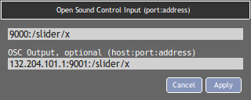

MIDI - OSC Control¶
It is possible to use a MIDI controller or an Open Sound Control device to have a finer control on sliders and knobs related to the different parameters in Cecilia.
MIDI¶
To use a MIDI controller, please connect it to your system before and be sure that it has been detected by your computer before launching Cecilia. If you have multiple MIDI devices connected, use the preferences window to select the one you want to use with Cecilia (or the “all” option if you want to use many of them).
If the option “Automatic Midi Bindings” is checked in the MIDI Preferences, Cecilia will automatically make two connections between your device and the interface. First, The controller 7 of the selected device will be assigned to the gain control (in decibels) of the output sound file (see the corresponding slider in the “Output” section). Second, the MIDI keyboard will be connected to the transposition slider of any sampler present in the “Input” section.
However, most parameters will have to be assigned to a controller with the MIDI learn function. The “Range Slider” (slider with two bounds) parameters will have to be assigned to two different controllers, for the minimum and maximum values.
To link a parameter to a MIDI controller with the MIDI learn function, Right-Click on the parameter label (or on the knob in Post-Processing section) you want to control and move the knob or slider of the MIDI controller to enable the connection. Then, the controller number should be written in the slider of Cecilia’s graphical interface. To disable the connection, hold Shift and Right-Click on the parameter label. Sliders in the sampler window can also be assigned to MIDI controllers.

OSC¶
It is also possible to control the parameters with the Open Sound Control (OSC) protocol. To enable an OSC connection, Double-Click on the parameter label (knobs in Post-Processing section can’t be assigned to OSC messages but sliders in the sampler window can) you want to control, enter the destination port and address in the window that will appear and click on “Apply”:
{kind=link}
In the first box, you should enter the port:address pair where Cecilia will read values coming from the controller. Optionally, the second box can be used to set a triplet host:port:address identifying the controller IP and the concerned widget. If not empty, Cecilia will send its widget value to initialize the controller at the beginning of the playback.
To assign OSC controller to a Range Slider, you must Double-Click one time on the left part of the parameter label to create a connection with the minimum value and Double-Click another time on the right part of the label to create the connection with the maximum value.
Sliders in the sampler window can also be assigned to OSC messages.
Please be aware that activating an OSC connection will automatically disable the previons MIDI connection related to the chosen parameter.